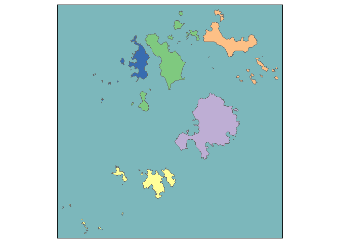
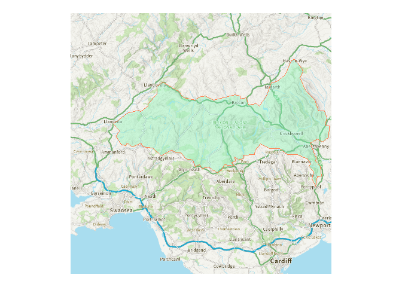

Retrieve area boundaries and data from the ONS Open Geography Portal

The main purpose of this package is to download area lookups and boundaries to R tables, using the ONS Open Geography API, for all areas at a specified level within a specified area.
The main script bounds() will return a data frame with the sub-area geometry column, as an sf object ready to be visualised as a map.
Installation
You can install this package from the R console by entering
remotes::install_git(“https://codeberg.org/francisbarton/boundr”)
if you have the remotes package installed.
Examples
Basic lookup of areas within a larger area, by name
Returns sfc tibble with latest available data
bounds("msoa", "lad", "Swansea")Simple feature collection with 30 features and 7 fields
Geometry type: MULTIPOLYGON
Dimension: XY
Bounding box: xmin: -4.333587 ymin: 51.53577 xmax: -3.842747 ymax: 51.77423
Geodetic CRS: WGS 84
First 10 features:
msoa21cd msoa21nm msoa21nmw msoa21hclnm
1 W02000168 Swansea 001 Abertawe 001 Pontarddulais
2 W02000169 Swansea 002 Abertawe 002 Clydach & Mawr
3 W02000170 Swansea 003 Abertawe 003 Morriston North
4 W02000171 Swansea 004 Abertawe 004 Llangyfelach & Tircoed
5 W02000172 Swansea 005 Abertawe 005 Gorseinon
6 W02000173 Swansea 006 Abertawe 006 Birchgrove
7 W02000174 Swansea 007 Abertawe 007 Loughor
8 W02000175 Swansea 008 Abertawe 008 Morriston South
9 W02000176 Swansea 009 Abertawe 009 Mynydd-bach
10 W02000177 Swansea 010 Abertawe 010 Llansamlet
msoa21hclnmw lad24cd lad24nm geometry
1 Pontarddulais W06000011 Swansea MULTIPOLYGON (((-4.044836 5...
2 Clydach a Mawr W06000011 Swansea MULTIPOLYGON (((-3.976283 5...
3 Gogledd Treforys W06000011 Swansea MULTIPOLYGON (((-3.913253 5...
4 Llangyfelach a Thircoed W06000011 Swansea MULTIPOLYGON (((-4.011018 5...
5 Gorseinon W06000011 Swansea MULTIPOLYGON (((-4.062941 5...
6 Gellifedw W06000011 Swansea MULTIPOLYGON (((-3.875069 5...
7 Casllwchwr W06000011 Swansea MULTIPOLYGON (((-4.053356 5...
8 De Treforys W06000011 Swansea MULTIPOLYGON (((-3.929819 5...
9 Mynydd-bach W06000011 Swansea MULTIPOLYGON (((-3.933911 5...
10 Llansamlet W06000011 Swansea MULTIPOLYGON (((-3.898853 5...Lookup areas with older dates
Trial and error may be required - or start by looking up what is available on the OpenGeography site.
bounds("msoa", "lad", "Shepway", lookup_year = 2011, within_year = 2015)Simple feature collection with 14 features and 5 fields
Geometry type: POLYGON
Dimension: XY
Bounding box: xmin: 0.7770266 ymin: 50.91095 xmax: 1.221137 ymax: 51.205
Geodetic CRS: WGS 84
First 10 features:
msoa11cd msoa11nm msoa11hclnm lad15cd lad15nm
1 E02005102 Shepway 001 Lyminge, Densole & Elham E07000112 Shepway
2 E02005103 Shepway 002 Hawkinge E07000112 Shepway
3 E02005104 Shepway 003 Folkestone North East E07000112 Shepway
4 E02005105 Shepway 004 Folkestone Foord E07000112 Shepway
5 E02005106 Shepway 005 Cheriton & Horn Street E07000112 Shepway
6 E02005107 Shepway 006 Folkestone Morehall & Sandgate E07000112 Shepway
7 E02005109 Shepway 008 Saltwood, Seabrook & Etchinghill E07000112 Shepway
8 E02005110 Shepway 009 Lympne & Palmarsh E07000112 Shepway
9 E02005111 Shepway 010 Hythe E07000112 Shepway
10 E02005112 Shepway 011 Dymchurch, St Mary's Bay & Brookland E07000112 Shepway
geometry
1 POLYGON ((1.089762 51.18973...
2 POLYGON ((1.170835 51.13259...
3 POLYGON ((1.184798 51.09985...
4 POLYGON ((1.189394 51.08954...
5 POLYGON ((1.135277 51.09801...
6 POLYGON ((1.17032 51.0953, ...
7 POLYGON ((1.111727 51.12941...
8 POLYGON ((1.000461 51.1184,...
9 POLYGON ((1.062613 51.07642...
10 POLYGON ((0.9884286 51.0706...Alternative ways to achieve a goal
In this case, the first option is notably quicker than the second, because they use different tables to create the lookup table.
The second option fails to return boundaries unless the year option is included, as it creates a lookup table for rgn23 and ctry23 but boundaries are not available for rgn23 (only rgn22).
Different columns are returned by each command.
bounds("rgn", country_filter = "EN", resolution = "BUC")Simple feature collection with 9 features and 2 fields
Geometry type: MULTIPOLYGON
Dimension: XY
Bounding box: xmin: -6.360297 ymin: 49.88234 xmax: 1.763706 ymax: 55.81121
Geodetic CRS: WGS 84
rgn23cd rgn23nm geometry
1 E12000001 North East MULTIPOLYGON (((-1.401114 5...
2 E12000002 North West MULTIPOLYGON (((-3.242936 5...
3 E12000003 Yorkshire and The Humber MULTIPOLYGON (((-0.5207704 ...
4 E12000004 East Midlands MULTIPOLYGON (((-0.248476 5...
5 E12000005 West Midlands MULTIPOLYGON (((-1.860821 5...
6 E12000006 East of England MULTIPOLYGON (((0.6458286 5...
7 E12000007 London MULTIPOLYGON (((-0.01191868...
8 E12000008 South East MULTIPOLYGON (((-1.55515 50...
9 E12000009 South West MULTIPOLYGON (((-6.349051 4...
bounds("region", "country", "England", lookup_year = 2022, resolution = "BUC")Simple feature collection with 9 features and 4 fields
Geometry type: MULTIPOLYGON
Dimension: XY
Bounding box: xmin: -6.360297 ymin: 49.88234 xmax: 1.763706 ymax: 55.81121
Geodetic CRS: WGS 84
rgn22cd rgn22nm ctry22cd ctry22nm
1 E12000001 North East E92000001 England
2 E12000002 North West E92000001 England
3 E12000003 Yorkshire and The Humber E92000001 England
4 E12000004 East Midlands E92000001 England
5 E12000005 West Midlands E92000001 England
6 E12000006 East of England E92000001 England
7 E12000007 London E92000001 England
8 E12000008 South East E92000001 England
9 E12000009 South West E92000001 England
geometry
1 MULTIPOLYGON (((-1.779088 5...
2 MULTIPOLYGON (((-3.242936 5...
3 MULTIPOLYGON (((-0.5207704 ...
4 MULTIPOLYGON (((-0.248476 5...
5 MULTIPOLYGON (((-1.860732 5...
6 MULTIPOLYGON (((0.8374914 5...
7 MULTIPOLYGON (((-0.01191868...
8 MULTIPOLYGON (((-1.55515 50...
9 MULTIPOLYGON (((-6.349051 4...You can just request bare lookup tables - no spatial data attached
create_lookup_table("spc", "spr")# A tibble: 73 × 4
spc23cd spc23nm spr23cd spr23nm
<chr> <chr> <chr> <chr>
1 S16000083 Argyll and Bute S17000011 Highlands and Islands
2 S16000086 Caithness, Sutherland and Ross S17000011 Highlands and Islands
3 S16000110 Na h-Eileanan an Iar S17000011 Highlands and Islands
4 S16000125 Inverness and Nairn S17000011 Highlands and Islands
5 S16000132 Moray S17000011 Highlands and Islands
6 S16000135 Orkney Islands S17000011 Highlands and Islands
7 S16000142 Shetland Islands S17000011 Highlands and Islands
8 S16000143 Skye, Lochaber and Badenoch S17000011 Highlands and Islands
9 S16000080 Almond Valley S17000012 Lothian
10 S16000104 Edinburgh Central S17000012 Lothian
# ℹ 63 more rowsA lookup table for Welsh local authorities to Senedd electoral regions
Sometimes boundr needs a little help finding what you are looking for. Supplying a year or country filter can help get the right table.
Using return_with = "full" includes all available columns, not just those referred to by the lookup and within arguments.
# This doesn't succeed:
# create_lookup_table("wd", "sener")
# supplying a year helps:
create_lookup_table("wd", "sener", lookup_year = 2023, return_width = "full")# A tibble: 764 × 9
wd23cd wd23nm wd23nmw ua23cd ua23nm ua23nmw sener23cd sener23nm sener23nmw
<chr> <chr> <chr> <chr> <chr> <chr> <chr> <chr> <chr>
1 W05001715 Bango… Bangor… W0600… Wrexh… Wrecsam W10000001 North Wa… Gogledd C…
2 W05001714 Acton… Gwauny… W0600… Wrexh… Wrecsam W10000001 North Wa… Gogledd C…
3 W05001713 Acref… Gogled… W0600… Wrexh… Wrecsam W10000001 North Wa… Gogledd C…
4 W05001615 Whitf… Chwitf… W0600… Flint… Sir y … W10000001 North Wa… Gogledd C…
5 W05001614 Treud… Treudd… W0600… Flint… Sir y … W10000001 North Wa… Gogledd C…
6 W05001613 Shott… Gorlle… W0600… Flint… Sir y … W10000001 North Wa… Gogledd C…
7 W05001612 Shott… Dwyrai… W0600… Flint… Sir y … W10000001 North Wa… Gogledd C…
8 W05001611 Saltn… Saltne… W0600… Flint… Sir y … W10000001 North Wa… Gogledd C…
9 W05001610 Queen… Queens… W0600… Flint… Sir y … W10000001 North Wa… Gogledd C…
10 W05001609 Pen-y… Pen-y-… W0600… Flint… Sir y … W10000001 North Wa… Gogledd C…
# ℹ 754 more rows
# or a country filter:
create_lookup_table("wd", "sener", country_filter = "WA", return_width = "full") |>
dplyr::filter(sener23nm == "South Wales West")# A tibble: 4 × 9
wd23cd wd23nm wd23nmw ua23cd ua23nm ua23nmw sener23cd sener23nm sener23nmw
<chr> <chr> <chr> <chr> <chr> <chr> <chr> <chr> <chr>
1 W05001099 Pontyc… Gorlle… W0600… Rhond… Rhondd… W10000009 South Wa… Gorllewin…
2 W05001088 Llanha… Llanha… W0600… Rhond… Rhondd… W10000009 South Wa… Gorllewin…
3 W05001084 Glyn-c… Glyn-c… W0600… Rhond… Rhondd… W10000009 South Wa… Gorllewin…
4 W05001076 Brynna… Brynna… W0600… Rhond… Rhondd… W10000009 South Wa… Gorllewin…The sfc tibble is ready to be passed to a mapping tool like tmap::qtm():
bounds("parish", "lad", "Isles of Scilly") |>
tmap::tm_shape() +
tmap::tm_polygons(
col = "par23nm",
palette = "-Accent",
legend.show = FALSE,
border.col = "grey40"
) +
tmap::tm_style("natural", bg.color = "#7cb7bb")
bounds now supports a shortcut which will return all bounds for a certain level, without having to specify a ‘within’ argument
Take care - you might download a lot of data doing this!
bounds("spr")Simple feature collection with 8 features and 2 fields
Geometry type: MULTIPOLYGON
Dimension: XY
Bounding box: xmin: -8.649996 ymin: 54.63326 xmax: -0.7246158 ymax: 60.86077
Geodetic CRS: WGS 84
spr22cd spr22nm geometry
1 S17000011 Highlands and Islands MULTIPOLYGON (((-5.572266 5...
2 S17000012 Lothian MULTIPOLYGON (((-3.17174 55...
3 S17000013 Mid Scotland and Fife MULTIPOLYGON (((-3.302574 5...
4 S17000014 North East Scotland MULTIPOLYGON (((-2.531457 5...
5 S17000015 South Scotland MULTIPOLYGON (((-4.085281 5...
6 S17000018 West Scotland MULTIPOLYGON (((-5.118861 5...
7 S17000019 Central Scotland MULTIPOLYGON (((-3.795887 5...
8 S17000020 Glasgow MULTIPOLYGON (((-4.271141 5...The points() function returns area (population-weighted) centroids where available
(Check the OpenGeography website).
sb <- bounds("msoa", "lad", "Swindon")
sp <- points("msoa", "utla", "Swindon")
sb |>
ggplot2::ggplot() +
ggplot2::geom_sf(colour = "grey33", fill = "grey95") +
ggplot2::geom_sf(data = sp, colour = "orange") +
ggplot2::theme_void()
A ggplot2 example
Here we specify a ‘within_names’ argument alongside the ‘lookup’ argument. There’s no ‘within’ argument to be specified because there’s nothing to lookup. (There aren’t any lookup tables for National Parks - just the boundaries).
bounds("npark", within_names = "Bannau Brycheiniog", resolution = "BUC") |>
ggplot2::ggplot() +
ggplot2::geom_sf()
# https://github.com/francisbarton/mapirosa
library(mapirosa)
# https://dieghernan.github.io/tidyterra/reference/geom_spatraster_rgb.html
library(tidyterra)
bb <- bounds(
"npark",
within_names = "Bannau Brycheiniog",
resolution = "BUC",
crs = 27700
)
bb_basemap <- mapirosa::build_basemap(
bbox = sf::st_bbox(bb),
zoom = 3,
style = "outdoor",
squarify = TRUE,
crs = 27700
)
ggplot2::ggplot(bb) +
tidyterra::geom_spatraster_rgb(
data = bb_basemap,
maxcell = 1e7,
max_col_value = 1
) +
ggplot2::theme_void() +
ggplot2::geom_sf(colour = "coral", fill = "aquamarine", alpha = 0.3)
Package internal structure
The structure of the project looks a bit like this:
bounds() / points() [main UI functions]
^
|
|
<------- create_lookup_table() [available to the user]
| ^
| |
| <--------- return_query_data()
| |
| <--------- return_lookup_query_info()
| \
| \
<------- return_spatial_data() <----- opengeo_schema [data]
^ / ^
| / |
<-------- pull_geo_query_url() |
|
build_schema()When you call bounds() you specify a lower level area (eg ward) and a higher level area (eg local authority), and you specify either the name of the higher level area (or areas) or its code.
return_lookup_query_info() then finds the API query URL of a suitable lookup table - one that contains columns for both your lower and higher level areas. It does this by filtering opengeo_schema, which is a cached copy of the various datasets available from the Open Geography API Services list. This schema is available as internal data in the package - but may need updating.
create_lookup_table() then builds a lookup table (a tibble) based on all the areas you have said you are interested in. At the same time, return_spatial_data() will - if you have specified you want spatial boundaries data for your areas - retrieve the boundary data at your chosen resolution for your lower level areas. These will then be joined onto the lookup table and provided to you as an sfc tibble.
Contributing
Suggestions for improvements are welcome, preferably posted as an issue here on GitHub. Contributions as pull requests are also welcome.
Please note that boundr is released with a Contributor Code of Conduct. By contributing to this project, you agree to abide by its terms.
News
See NEWS.md for version notes.
boundr was previously jogger.
Licences
The code in this repo is MIT licensed.
The data that the code helps you retrieve is issued under a variety of licences, including:
Licensing statement as stipulated by the ONS:
- Source: Office for National Statistics licensed under the Open Government Licence v3.0
- Contains OS data © Crown copyright and database right 2024